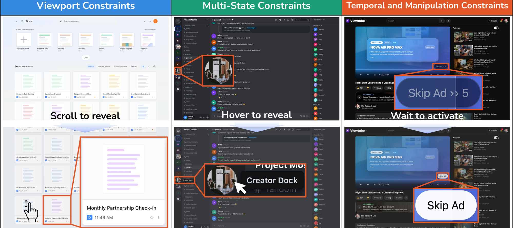
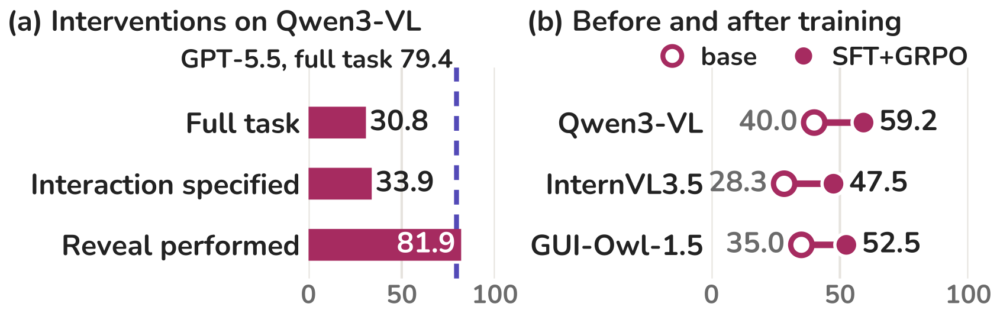
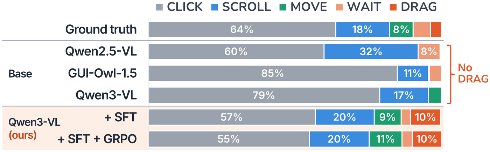

Abstract
GUI grounding benchmarks ask whether an agent can localize a target that is already visible in a static screenshot. Real interfaces often violate this assumption: a target may be off-screen, appear only after a state change or hover, remain occluded, or become actionable after a delay. This leaves the ability to recover target visibility unevaluated. To measure this reveal step, we introduce Interactive GUI Grounding (IGG), a benchmark in which an agent must first make the target visible through interaction and then click it. IGG contains 601 tasks across 16 controllable GUI environments and seven visibility-constraint sub-types, with a compact action space of scrolling, moving, dragging, waiting, and clicking. In our human study, participants achieve 94.6% accuracy, while GPT-5.5 reaches 79.4% and the strongest evaluated open-source VLM reaches only 31.6%. To identify the source of this gap, we conduct two controlled interventions. Telling Qwen3-VL which interaction to perform raises its accuracy only from 30.8% to 33.9%, whereas performing the interaction for the model raises it to 81.9%. The bottleneck is executing the reveal interaction, not recognizing the target once it is exposed. We further show that this capability is learnable, demonstrating that visibility recovery can be strengthened consistently across model families.
Interactive GUI Grounding
Static grounding benchmarks give the model a screenshot in which the target is already on screen. In IGG the target starts out hidden or inactive, so the agent must first reveal it and then localize it. Like static grounding, IGG scores a single final click.

Benchmark
IGG has 601 tasks in 16 controllable web environments modeled on everyday apps such as Google Docs, Discord, YouTube, Figma, and Google Maps. Each task belongs to one of seven sub-types under three constraint types. The agent sees only screenshots and its action history, and has eight actions to find and click the target.

Results
A large human–model gap
Humans solve 94.6% of tasks. GPT-5.5 reaches 79.4%, and no open model solves a third. Movable occlusion and dynamic targets remain hard even for GPT-5.5.

The bottleneck is the reveal, and it is learnable
Telling Qwen3-VL which interaction is required barely helps (30.8 → 33.9), while performing the interaction for it raises accuracy to 81.9. SFT followed by online GRPO improves three 8B models by 17–19 points.

Base models never drag
Base VLMs mostly click, as if the target were already visible, and none of them emits a drag. Training brings the missing reveal actions into the policy.

BibTeX
@inproceedings{kim2026igg,
title = {{IGG}: A Benchmark for Interactive {GUI} Grounding under Visibility Constraints},
author = {Kim, Kyeongseon and Son, Jiyeon and Oh, Tae-Hyun},
booktitle = {Proceedings of the 2026 Conference on Empirical Methods in Natural Language Processing (EMNLP)},
year = {2026}
}